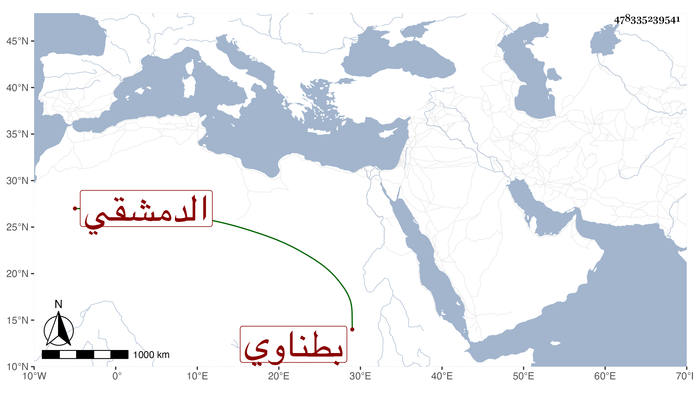

0902Sakhawi.DawLamic.ITO20230111-ara1.EIS1600.478335239541
Biography ID: 478335239541
761
عبد القادر بن محمد بن اسماعيل الدمشقي الكفر بطناوي شيخ كتب إلى بالإجازة في استدعاء مؤرخ بسنة خمسين وقيل أنه كان في خدمة أبي هريرة بن الذهبي سماعه بقراءة شيخنا على محمد بن أبي هريرة المذكور لجزء فيه ثلاثة محالس من ... أمالي أبي يعلي الموصلي في رمضان سنة اثنتين وثمانمائة وما علمته حدث . مات سنة بضع و خمسين .
